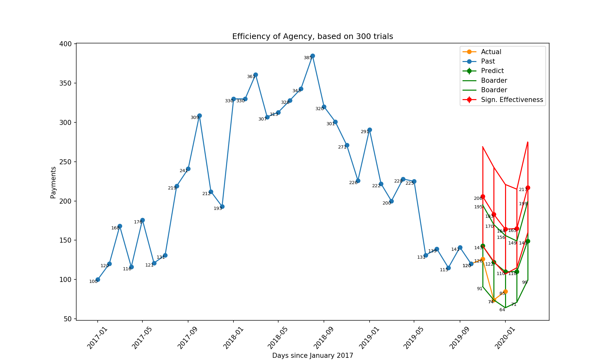
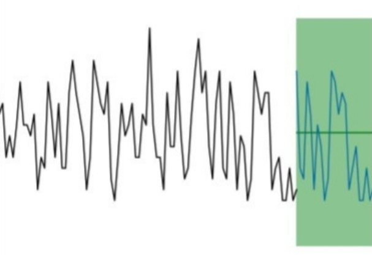

LINKS
August 24, 2020
An article by Sergey Matrosov
The A/B test may be used to ascertain whether there is any effect on the audience by implementing certain changes on your website, app, etc. But occasionally, there is an urgent need to change, for example, the websites’ flow at once, affecting all users. Or it may be necessary to enlist the help of a digital marketing agency too and allow it to fully control one or even all source channels. To treat it like a test we need, strictly speaking, two parallel universes; in one, there should be the previous flow of the website/previous in-house marketing team and in the other, the new flow or the digital marketing agency. However, the limited availability of this option drives us to use other methods.
1. The difference in differences.
This is the most straightforward and easy to follow, but the most inaccurate method. However, you may wish to use it to be understood very easily by others (and if you do, you can progress to a more sophisticated model for the results’ evaluation). Say, you have data relating to your websites’ old flow/old marketing team for last year:
Our first difference is:
May 2019 - April 2019 = 120 - 100 = 20 conversions
Your company started an experiment in April 2020:
Our second difference is:
May 2020 - April 2020 = 140 - 120 = 20 conversions.
Our third difference consists of the second difference - first difference = 20 - 20 = 0. If the third difference is 0, this means that there is no effect from our changes. If the > 0 effect is positive, < 0 is negative. The next step is to measure the effect size of this, which is understood as the magnitude of changes. If the impact is not that significant, even if it is positive, we could interpret it as a failure because we invested resources (time and money) to remake the flow of the website/carry out work with a digital agency.
2. Regression analysis.
This is another simple method, but more accurate than the previous one. It is also easy to interpret the results and model itself.
You have your daily data for February and March 2020 and you can use these data to predict the results on each day of April and May 2020. But these must be validated: do they have normal error distribution? Do they take into consideration the effects of weekdays and weekends? Do they count local holidays, etc.?
Then you make your prediction, for example:
And real data
Once again, we need to calculate the difference, but in this case, it is different between distributions:
01 April 2020 (actual) - 01 April 2020 (predicted) = 5 - 4 = 1
02 April 2020 (actual) - 02 April 2020 (predicted) = 7 - 6 = 1
04 April 2020 (actual) - 03 April 2020 (predicted) = 6 - 6 = 0
...
Here is the result of this subtraction, also shown as distribution:
1, 1, 0...
If there is no effect, the center of this distribution will be near 0. If it has a positive effect, the center will be from the right of 0, if negative - from the left. And again, calculate the effect size!
3. Bayesian Structural Time Series (BSTS).
This is very useful because it can help discover the causations (the cause of success or failure) with its counterfactual prediction and observed data, as though there are really two universes. However, this is the most complicated method and is very difficult to explain easily.
BSTS in our case is used to forecast time series. A structural times series means that time series `phi(t)` are structured (equal to) by several components, particular assumptions, similar, for example, to a worldwide linear trend `phi(t)`1 , another linear local trend `phi(t)`2 , seasonal effect `phi(t)`3 , etc., so:
`phi(t)`=`phi(t)`1 `+ phi(t)`2 `+ phi(t)`3 `+ ... + phi(t)`n `+ epsilon`,`epsilon` ∼ N(0,`sigma` 2), where `epsilon` represents white noise that is normally distributed. For simplicity, you can consider ε as an error of our prediction, that has a normal distribution of its values that are independent (one from another; in other words, one does not cause another one). Using the distribution of this error, we can simulate multiple realizations of the future that have a certain range, based on this error.
To clarify, the historical time series is only one observed instance at a time. Based on this, we can make a function with finite predictors and coefficients like the simple regression model. However, as a result, the issue is that every time we use the same values of predictors, we always have the same outcome: like `phi(x)=2x` always equals to 4, given `x=2`. That is why, having the same values and coefficients of predictors, we use distribution of the error, that is naturally implied. Recorded several times and summed up with this outcome (`theta`), we are given a range of possible values of future time series, such as (`theta+epsilon`1,...,`theta+epsilon`n) on each `t`j.
Here we consider Bayes and the Bayesian interference of distribution of the probability of 1) the outcome and 2) the next time series, given past time series. This can naturally handle missing data (we do not know all possible predictors that can affect our outcome, which is why the concept of maximum likelihood “feels” their effect more and more with every update), providing a quantification of uncertainty (as a maximum likelihood).
Now, let’s consider our example. Here is the full code. I made this model to evaluate the performance of a digital marketing agency over a period of five months for one company, which chose to work with this agency instead of an in-house team. The goal was to predict the results of the in-house team as if it were still carrying out digital marketing for the company (variable A) and to set KPIs, based on this prediction, for the digital marketing agency (B) that would have statistical significance, 𝛼 = 0.05. The model tries to take into consideration weekends, the inflation of progressive investment and the monthly budget, as separate factors that are not included in the BSTM estimation.
Let’s imagine that this agency started with improvements at Search, given base conversion as purchase/payment.

Blue - previous data, i.e., the results of the in-house team before the agency commenced its work.
Orange - actual observed data. This is the result of the agency's work.
Green - prediction of the results of the in-house team (counterfactual prediction). Look closely at it - it does not just focus on intervals, but encompasses the distribution of means of each generated distribution of conversion, based on the prediction of the BSTS.
Red - this is also a distribution of means of the distribution of conversion. The distribution of conversions that is statistically significant by A/B standards, is compared with the predicted distribution of conversion by an in-house team. If the agency’s results (orange line) are above the green interval, we can consider that their results have not been achieved by accident (the chance of this is very low).
The methodology:

The result is conflicting: the actual data (orange line) show that the results are not just at the predicted range, as if this were the result of the in-house team, but below its mean. If the agency had been above the green interval, we could consider that the agency really helped the business achieve better results and its strategy could be considered as the reason for success. KPIs have been implemented and the in-house team must learn from these. However, what if the results across all five months are above the mean of the green interval but are still within it? Or are near the upper limit of it? Or just slightly above it? There is no exact answer, this must all be discussed by the business and the agency in order to come to an agreement.
LINKS